5580E anti-theft device
- Path
- Descriptions > 55 ELECTRICAL EQUIPMENT > 5580 SPECIAL ACCESSORIES > 5580E anti-theft device
- Kind
- system description
- Applies to
- all engines; all production periods
- Interactive page
- https://sloeber94.github.io/elrnDB-fMltpl/en/#/2888294
Applies to: all engines; all production periods
This vehicle has global anti-theft protection, consisting of three devices:
Electronic engine immobilizer system, known as the 'FIAT CODE 2': the keys have a special electronic device called a 'Transponder' which transmits a coded signal to a special electronic control unit. If the latter recognizes the code sent, it allows the engine to be started up, otherwise, it 'immobilizes' the engine management control unit.
Alarm system (optional) which offers the vehicle volumetric and perimeter protection: the following are checked:
- the closed state of the doors, boot and bonnet (perimetral check);
- the presence of a moving object inside the passenger compartment (volumetric control);
- the operation of the ignition switch;
- the condition of the supply cables for the vehicle and the emergency key.
Anti-break in devices: numerous devices and measures are taken to prevent the forced opening of all the vehicle locks; these are achieved through: For example, there are shields on the front and rear door locks and the door safety knobs have been specially designed.
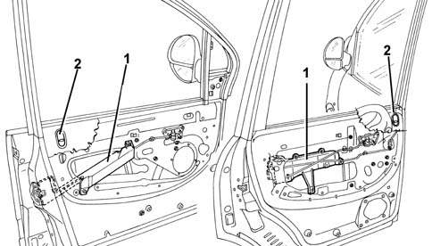
1, shields on the locks 2, safety knob
FIAT CODE
To increase protection against theft attempts, the vehicles have been fitted with an electronic engine immobilizer system known as the 'FIAT CODE 2'.
The keys are equipped with an electronic cipher 'Transponder' which transmits a coded signal to a special electronic control unit. If it recognizes the code sent, it allows the engine to be started up.
Cipher code system
The second generation Code system has the following characteristics:
- The code used in the dialogue, which takes place via the aerial, between the CODE control unit and the key varies each time the engine is started up ('rolling code'). in addition, the code transmitted is not 'intelligible', but is encoded by means of a special alghorhythm. So it cannot be reproduced, not even using electronic scanners!
- Master key eliminated: two keys which have already been 'programmed' for both the Code system and the alarm (remote control), if fitted, are supplied
- CODE control unit with direct self-test (not through i.e. any more)
- programming of the secret code in a DATA BASE managed by Parts. Therefore when the new vehicle is handed over to the customer, the service network should not carry out any programming procedure for the Code or the alarm.
- the secret code never appears in 'un-encrypted' form for any operator (not the key supplier, nor the FIAT AUTO factory, nor the operator who duplicates the keys through the PARTS DATA BASE).
Components
The Code system consists of:
- two (or more) electronic keys
- a Code electronic control unit, with serial line for communication with the i.e. control unit and serial diagnostic line
- aerial in the ignition switch
- CODE Card for the emergency starting procedure.
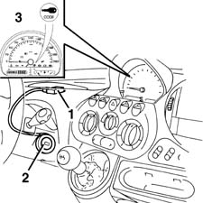
1, CODE electronic control unit 2, Ignition switch with aerial 3, Warning light on instrument panel
Keys
2 keys are supplied, with transponder and remote control (if an alarm is fitted).
The transponder is an electronic device, NOT supplied by the battery, which contains a special 'ID' code (different for each key and not in cipher) and the secret code connected to the vehicle Code control unit.
When the key is inserted in the ignition, in the ON position, the transponder is energized by radio waves from the aerial around the key lock barrel and automatically responds by emitting a code.
The remote control for locking/unlocking the doors contains its specific code (see Alarm below).
The keys are supplied already programmed in the Code control unit by the production plant.
All the codes are then stored in a DATA BASE managed by the Parts Division, and linked to the vehicle's chassis number.
Therefore, when a new vehicle is handed over to a customer, the Service Network should not carry out any programming procedures.
If a key is mislaid or additional keys are requested, this request should be passed on to the Parts Dept. following the procedures described below.
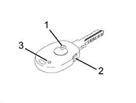
1, Transponder 2, Remote control operating button (see Alarm) 3, Remote control repeater LED (see Alarm)
Code ecu
The main function of the Code control unit is to recognize the key inserted in the ignition switch. The Code control unit is also responsible for programming the keys and the Code warning light.
The Code control unit contains the secret code used in the dialogue which takes place via the aerial between the Code control unit and the key transponder.
It also contains the codes for the enabled keys and the code used in the dialogue between the Code control unit and the i.e. control unit: when the key is turned to the ON position for the first time, if the key is recognized, this code is transferred to the i.e. control unit.
The control unit has a direct diagnostic line, separate from the i.e. control unit line.
The Code and i.e. control units 'dialogue' via a bidirectional serial line: this means that information travels in sequential fashion from the i.e. control unit to the Code control unit and vice versa.
Code control unit pin-out
-
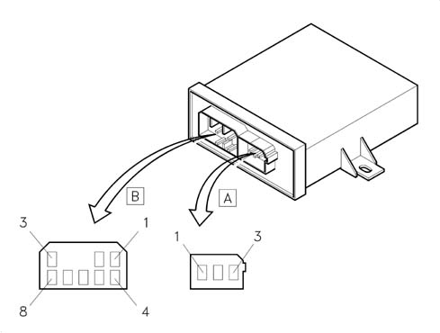
Connector A
Pin, Signal
1, Aerial supply (+)
2, N.C.
3, Aerial supply (-)
Connector B
Pin, Signal
1, N.C.
2, Signal for warning light bulb
3, Direct supply
4, Earth
5, Diagnostic line K
6, Serial connection line with the i.e. control unit
7, N.C.
8, Supply controlled by the ignition
Code system warning light
The Code warning light in the instrument panel is managed by the Code control unit.
If the ignition key is turned to the ON position, the indicator can signal one of the following conditions:
- on briefly (0.7 s) and then off: key recognized, system operation correct;
- on constantly: the control unit has detected one of the following faults:
- key not recognized by the Code control unit;
- serial line between Code control unit and i.e. not connected or no communicaton between the control units
- key programming procedure not carried out (new control unit from PARTS DEPT.).
The operation of the warning light is summarized in the following diagram.
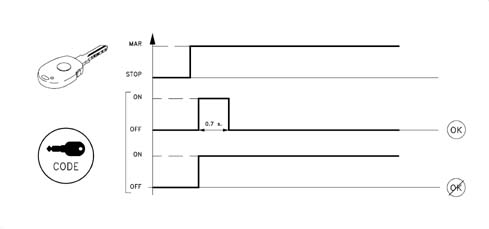
Code card
This is the card which contains:
- the emergency electronic CODE which allows the vehicle to be started using the Examiner or another diagnostic instrument or using the accelerator pedal;
- the mechanical code.
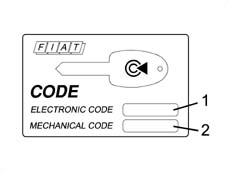
1, electronic CODE 2, mechanical CODE
The emergency electronic code is also used for the system fault diagnosis and for other operations using the Examiner or other diagnostic equipment. Many of these operations (e.g. 'Programming Keys') can only be carried out after this code has been entered.
Therefore before any operation, the Customer must be asked for the CODE Card.
The CODE Card should not be left in the vehicle in case it is stolen: it should, however, be available for the emergency starting procedure described below.
Operation
Dialogue between the code control unit, key and i.e. control unit
The dialogue between the CODE control unit, the key and the i.e. control unit takes place in the following way:
- with the ignition on, the i.e. control unit asks the Code control unit for the secret code;
- the Code control unit asks the Transponder contained in the key for the key code;
- the Transponder transmits its specific key code to the Code control unit, where the key code received is compared with the enabled codes;
- if the received code is amongst the enabled ones, the secret code is checked through a coded dialogue between the Code control unit and the Transponder;
- if this recognition takes place, the Code control unit sends the secret code to the i.e. control unit, which checks that its conforms and enables the starting and running of the engine. The Code warning light goes out at the same time.
- if this recognition does NOT take place, the Code control unit sends another special code to the i.e. control unit, which will not allow the engine to be started up and will keep the Code warning light on fixed.
The logic of the dialogue between the two control units is summarized in the diagram below:
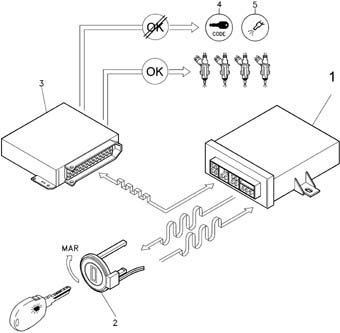
1, CODE electronic control unit 2, Ignition switch with aerial 3, Engine control unit 4, 'CODE failure' warning light in control panel 5, I.E. failure waring light in the dashboard
System self-test
The control unit carries out a continuous autodiagnosis of the system operation. In particular:
- it detects and memorizes any faults
- it recognizes the various components and the type of fault
- it signals the onset of these faults via the special warning light in the instrument panel:
The Code system has its own diagnostic line and therefore it is possible, using the Examiner or other diagnostic equipment, to detect the information stored in the control unit memory.
The control unit provides information on:
- the state of the control unit: it indicates whether the control unit is correctly programmed and operational, if it is unusable, or if the 'Key Programming' procedure has not been carried out (new control unit ordered from PARTS DEPT.)
- the outcome of the procedure: it indicates that the i.e. control unit has recognized the code, thus allowing the engine to be started.
- the state of the Code warning light: on or off (it makes it possible to identify any irregularities in the warning light connections)
- state of the key (Transponder analysis)
The control unit then recognizes faults in all the system components:
- CODE control unit;
- aerial;
- key transponder;
- serial line with i.e. control unit.
Once the faults have been repaired, it is then possible to cancel the faults memorized by the control unit.
It is also possible to carry out the following procedures using the Examiner:
- 'Programming keys' (in a new programming procedure the keys which are no longer present must be cancelled using the Examiner);
- Cancelling keys programmed.
The operations that can be carried out using the Examiner are only enabled after the 'electronic code' emergency code on the Code Card has been entered
Therefore before any operation using the Examiner or other diagnostic equipment, the Customer must be asked for the CODE Card.
Emergency starting procedure
The emergency starting procedure makes it possible to start up the engine if there is a problem in the CODE system (CODE control unit faulty, keys unusable, etc.), i.e. if the injection control unit has not received the go ahead for starting from the CODE control unit.
This operation is useful for starting up the engine and driving the vehicle to a Service Centre to have the fault repaired.
N.B. AFter an emergency starting procedure, if the ignition is turned to the OFF position, the fuel injection control unit will return to the engine immobilized condition and the procedure should be repeated, if necessary.
This procedure can be carried out using the Examiner or - only in emergencies - using theaccelerator pedal:
By acting on the accelerator pedal, the emergency code is transmitted to the injection control unit through the signal detected by the butterfly valve.
Carry out the following operations in the order given:
- Read the emergency code on the Code Car.
- Turn the key to the ON position; press the accelerator pedal and keep it pressed. The i.e. failure warning light should come on for 4 seconds, then go out briefly (150 ms) and come on again for another 4 seconds.
- When the warning light goes out, release the accelerator pedal.
- When the pedal is released, the warning light should start to flash (at a frequency of 0.8 Hz).
- After a number of flashes equivalent to the first figure of the code on the Code Card, fully depress the accelerator pedal and keep it depressed.
- The injection warning light should come on again for 4 seconds and then go out to indicate that the first figure has been accepted.
- When the warning light goes out, release the accelerator pedal.
- When the pedal is released, the warning light will start to flash again as before (frequency 0.8 Hz).
- After a number of flashes equal to the second digit, press the accelerator pedal; the warning light comes on for 4 seconds to indicate that the second digit has been accepted
- Repeat the above for the other figures of the code read on the CODE CARD.
- When the pedal is released after the last figure has been accepted, the warning light should flash at twice the frequency (1.6 Hz) to indicate that the entire code has been accepted. If, on the other hand, the warning light remains on, this means that the code has been rejected.
- If the code has been accepted, start up the engine; if this is not the case, turn the key to the OFF position and try the operation again.
The graph illustrates pedal operations and warning light flashes for the code 42173
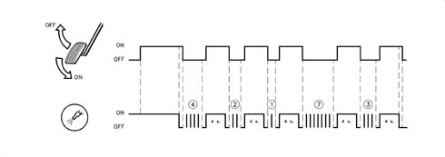
ALARMS
The compact alarm system (integrated control unit and siren) offers volumetric and perimetral protection of the car.
An electronic control unit monitors the following:
- the closed state of the doors, boot and bonnet (perimetral check);
- the presence of a moving object inside the passenger compartment (volumetric control);
- the operation of the ignition switch;
- the condition of the supply cables for the vehicle and the emergency key.
The radiofrequency type of remote control adopted facilitates the activation operations because this system has a high range (about 10 metres maximum), it is non directional and it is not affected by the transparency and cleanliness of the windows.
In addition, the system for transmitting the secret code between the remote control and the receiver is a rolling code, in other words a cipher code which is different each time.
Composition
The alarm system consists of:
- two (or more) keys with remote control;
- an electronic control unit with a built-in siren;
- a remote control receiver;
- volumetric sensors (incorporated in the front courtesy light);
- a deterrent LED (device activated indicator);
- emergency key;
- bonnet opening switch;
- boot opening switch (incorporated in the lock);
- a doors open switch (incoroprated in the locks).
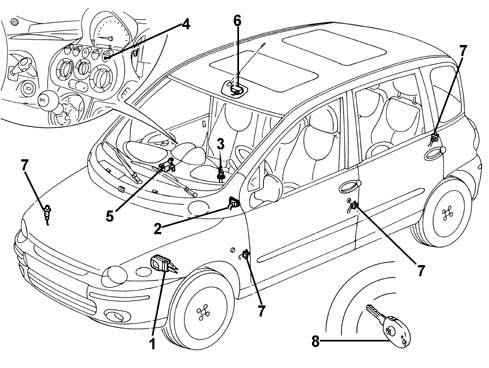
1, Alarm electronic control unit with siren incorporated 2, Diagnostic socket 3, Emergency key 4, LED 5, Receiver 6, Volumetric sensors 7, Doors, boot and bonnet switches 8, Remote control in the key
Alarm control unit
An electronic control unit manages the entire system checking all the components.
The main function of the control unit is to check:
- the state of the doors, boot and bonnet lids, through the switches in the locks
- the presence of a moving object inside the passenger compartment, via volumetric sensors.
- the condition of the system supply cables (both directly from the battery and those controlled by the ignition)
- the condition of emergency key supply leads
- the operation of ignition switch
The control unit is equipped with a self-test function which detects and memorizes faults in the control unit itself and the system components and also checks the condition of the connecting cables.
The control unit also memorizes the number of times the alarm is activated and set off.
The control unit operating software may be altered to meet regulations governing the use of alarm systems applicable in different markets. (see 'CONTRY CODE' programming)
The electronic control unit incorporates the siren.
The siren can operate at different levels according to the programming for the various countries (see description which follows).
The control unit is located at the front, under the Locary on the left of the engine compartment.
Control unit pin-out
-
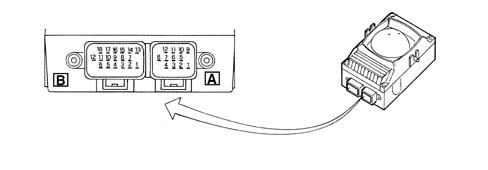
Connector A Pin, Signal 1, Deterrent LED 2, N.C. 3, Direct supply 4, Emergency key OFF 5, Anti-tilt module supply (*) 6, Diagnostic line K and connection with receiver 7, Emergency key ON 8, Volumetric sensors supply 9, Control unit earth 10, Anti-tilt module signal (*) 11, Volumetric sensor earth 12, Volumetric sensors signal Connector B Pin, Signal 1, Right branch direction indicators control 2, Left branch direction indicators control 3, Preparation for external relay contact (*) 4, N.C. 5, N.C. 6, N.C. 7, Direction indicators supply 8, Left front door signal 9, Right front door signal 10, N.C. 11, N.C. 12, Supply controlled by the ignitionl 13, Emergency key supply 14, Doors open signal (check panel operation)(*) 15, Left rear door signal 16, Right rear door signal 17, Boot lid signal 18, Bonnet lid signal (*) Outputs not connected on this version
Keys
2 keys are supplied with a transponder and remote control transmitter.
The transponder is used by the Code system (see previous CODE system)
The remote control incorporated in the key consists of an electronic circuit (radiofrequency transmitter - 433.92 Hz -) supplied by battery.
Each time the remote control button is pressed, it sends the radio code within a maximum range of 10 metres.
The LED in the key flashes to signal that the button has been operated correctly.
It also signals when the battery is run down by giving a single brief flash each time the actual button is pressed.
If the button remains pressed for more than 80 seconds, the control signal is stopped in order not to run the battery down unnecessarily. The signal is activated by releasing the button and pressing it again.
Each remote control (and therefore each key) contains its own special code; up to 8 keys (remote controls) can be programmed in one receiver.
The keys are supplied already programmed in the CODE control unit by the production plant.
All the codes are then stored in a DATA BASE managed by the Parts Division, and linked to the vehicle's chassis number.
Therefore, when a new vehicle is handed over to a customer, the Service Network should not carry out any programming procedures.
If a key is mislaid or additional keys are requested, this request should be passed on to the Parts Dept. following the procedures described below.
1, Transponder (see CODE) 2, Remote control operating button 3. Remote control repeater LED
Receiver
The receiver is an electronic device which receives the transmitter signal. It is located in a central position under the dashboard.
It is connected to the control unit via the serial line and directly manages the following system functions:
- it receives, decodes and manages the remote control signals
- it activates/deactivates the alarm system
- it locks and unlocks the doors
- it memorizes the codes for enabled transmitters.
The receiver contains the PASSWORD used to programme (enter or delete) the various codes in the transmitters.
The receiver also has its own autodiagnostic function which detects and memorizes faults in the actual receiver and the components connected to it and it checks the condition of the connecting cables.
Each receiver is 'programmed' by the production plant, by means of a card with bar code.
All the codes are then stored in a DATA BASE managed by the PARTS DIVISION.
Therefore, when a new vehicle is handed over to a customer, the Service Network should not carry out any programming procedures.
If a receiver is replaced, a request should be put in to the Parts Dept. following the procedures described below.
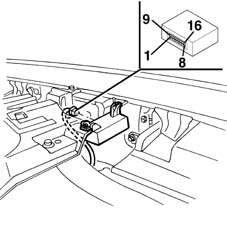
Receiver pin-out
Pin, Signal
1, Direction indicators control (*)
2, Diagnostic line K and connection with alarm control unit
3, Direct supply
4, Earth
5, Door 'unlocking' control
6, Door 'locking' control
7, Supply controlled by the ignition
8, Courtesy lights control (*)
9, Electric windows control (*)
10, N.C.
11, N.C.
12, N.C.
13, N.C.
14, N.C.
15, N.C.
16, N.C.
(*) Outputs not connected on this version
Emergency key (not planned for certain markets)
The emergency key for deactivating the system is located under the driver's glove compartment, next to the fuse box.
It makes it possible to exclude the system, for example in the case of repair operations:
- by turning the key in an anti-clockwise direction, the system is deactivated: emergency key in OFF position
- by turning the key in a clockwise direction, the system is activated: emergency key in ON position.
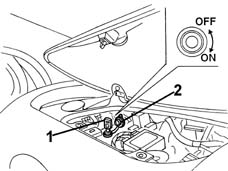
1, Emergency key 2, Protective cover
Switches
The same switches as for the central locking system are used to control the doors and boot lid.
A special switch instead indicates the opening of the bonnet.
Volumetric sensors
The volumetric sensors allow additional surveillance because they check that there are no intrusions in the vehicle.
They are located at the centre above the dashboard, built into the front courtesy light; in this way they supervise the entire interior compartment. The unit consists of two separate ultrasound capsules: one transmitter (TX) and one receiver (RX).
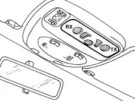
Deterrent led
The deterrent LED is located in the dashboard, at the centre of one of the buttons., and signals the state of the system (on, off, etc...) plus any faults, as described previously.
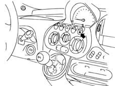
Operation
Switching on
it is only possible to switch on the alarm with the ignition key in the OFF or PARK positions or with it extracted.
The alarm is activated by pressing the button in the remote control. It has an operating range of about 10 metres.
When the command has been given, the door locks are locked, the siren sounds and, at the same time, the direction indicators come on for about 2.5 seconds; the deterrent LED also flashes. the deterrent LED also flashes.
the activation of the auditory signals and the flashing of the direction indicators depends on the various country modes (see description which follows).
Switching off
The alarm is switched off by pressing the remote control button.
When the command has been given, the doors are unlocked, the siren sounds briefly twice and, at the same time, the direction indicators flash twice.
The activation of the auditory signals and the flashing of the direction indicators depends on the various country modes (see description which follows).
Switching on with siren excluded
The operation of the siren can be excluded during the surveillance stage: when switching on, press the remote control button for more than 4 seconds.
After the auditory signals connected with the engagement, there are 5 auditory signals in quick succession to indicate that the siren has been excluded.
Next time it is switched on, the exclusion procedure should be repeated, if the siren is to be excluded once again.
Excluding the system
The system can be deactivated with the emergency key (OFF position) if:
- the remote control batteries are run down
- the system is faulty
- the vehicle is not used for long periods (more than 3 weeks).
With the alarm system excluded, the door lock/unlock with the remote control nevertheless works.
When the vehicle is handed over, the emergency key should be in the ON position.
'surveillance' stage
During the 'surveillance' stage (vehicle closed and alarm switched on), the deterrent LED flashes at a frequency of 0.8 Hz and, in this state, the system:
- surveys the closing of the doors, bonnet and boot lid;
- detects the condition of the connecting cables for the positive from the battery and earth;
- detects the condition of the connecting cables for the emergency key;
- detects the unauthorized insertion of the ignition key;
- surveys movements inside the passenger compartment (volumetric surveillance).
Alarm state
The alarm comes into operation when one of the surveillance sensors detects an irregular situation.
The alarm state (if the cause of the alarm persists) can be recognized as follows:
- the siren is activated (for a maximum of three cycles lasting 26 seconds);
- the direction indicators are activated for about 4-5 minutes (only in countries where the law permits);
It is possible to escape from the alarm situation:
- by pressing the remote control button;
- by deactivating the emergency key
This second procedure should only be used if it is not possible to escape from the alarm situation by pressing the remote control button.
When the system is switched on again (key set to ON), the system returns to the situation it was in at the time of exclusion.
Inhibiting volumetric surveillance
It is possible to inhibit the volumetric surveillance, before switching the system on.
starting with the ignition key in the ON position, turn in quickly to OFF, ON and then OFF.
The exclusion of the volumetric surveillance is confirmed by the deterrent LED coming on for 2 seconds.
When the ignition key is next switched ON (for more than 30 seconds) the volumetric surveillance will be re-enabled. This period of 30 seconds allows, for example, the electric windows to be closed, which, if they have been left open by mistake, will maintain the exclusion of the volumetric surveillance.
Alarm auto switch-on (belgian market only)
Vehicles with alarms programmed for the Belgian market are equipped with an auto switch-on function.
This function ensures that the alarm is automatically partly engaged (the doors are not locked): the alarm is engaged 28 seconds after the customer leaves the vehicle., i.e. after the system has detected the following sequential conditions:
- ignition key turned from ON to OFF;
- last open door opened and then closed.
The opening of any door, or the bonnet lid or the boot lid, before the delay period (28 seconds) has elapsed stops the automatic engagement. The closure restores the counting, starting, however, from zero.
To regain possession of the vehicle after the auto-engagement, simply press the remote control button once.
Signalling of remote control batteries discharged
The signal involves the remote control LED giving one brief flash when the button is pressed.
When this signal occurs, the batteries should be replaced as soon as possible.
After the batteries have been replaced, the LED will work properly after the second time the button is pressed.
The deterrent LED also signals that the remote control batteries are run down by coming on constantly for a maximum of 2 minutes when the system is switched off.
'country code' programming
The control unit is capable of adapting its operation to the laws governing the use of alarm systems in force in the various markets. There are different operating modes ('COUNTRY CODE') available in the actual control unit memory for the sound of the siren and the flashing of the direction indicators. These functions are also sometimes excluded.
The 'EEC' operating mode is selected in production.
To change this setting, it is possible to use the special procedure using the Examiner or other diagnostic equipment.
Alternatively, and only in the case of an emergency, the following procedure can be used:
- check that the emergency key is switched ON;
- turn the ignition key to the ON position;
- open the bonnet;
- turn the ignition key from ON to OFF
- within 15 seconds, press the bonnet lid button 7 times in quick succession. This manoeuvre should be carried out in less than 10 seconds. The last time the button is pressed, keep it pressed;
- 5 brief auditory signals (5 in 2 seconds) followed by one long one (lasting 2 secnods) indicate the entry in the operating mode programming.
- release the bonnet lid button;
- within the next 10 seconds, press and release the button a number of times equivalent to the desired country identification number, given in the table below (each time the button is pressed there will be an auditory confirmation signal);
- wait for 10 seconds; an auditory signal lasting a second will indicate the exit from the programming mode system.
COUNTRY CODE TABLE
Code, Country
1, Default (EEC)
2, United Kingdom
3, Belgium
4, Switzerland
5, Holland
6, WORLD
System self-test
Both the control unit and the receiver are equipped with a self-test function.
When the alarm is switched on, the operation of the system is continuously checked.
When the system is switched on an autodiagnosis is carried out which can be recognized by the LED flashing, in accordance with the table below:
FLASHING MODE, MEANING
4 4 Hz (= 4 flashes in a second): No fault detected
8 8 Hz (= 8 flashes in a second): Door/bonnet/boot open or switch faulty
Light on constantly: Volumetric sensors faulty
If a fault is detected, the component in question is excluded from the surveillance and an auditory warning signal is emitted one second after engagement.
When the system is switched off, this is indicated by the LED for the sensor which set off the alarm during the surveillance flashing, in accordance with the details in the table below:
NO. PULSES, COMPLENT IN ALARM STATUS
1. 1 Impulse, Right front door
2 Impulses, Left front door
3 3 Impulses, Right rear door
4 4 Impulses, Left rear door
5. 5 Impulses, Volumetric sensors
6. Impulses, Bonnet lid
7. Impulses, Boot lid
8 Impulses, Supply controlled by the ignition
9 Impulses, Supply cables cut
10 Impulses: At least 3 simultaneous causes of the alarm
Light on constantly: Remote control batteries run down
An impulse consists of a flash at a frequency of 1 Hz (1 flash per second).
If several causes for the alarm are detected, the blink codes occur in orders, with an interval of 1.5 secs in between.
If the ignition key is turned to the ON position, the signal is interrupted.
Use of the examiner or other diagnostic equipment
Ths system has its own diagnostic line and it is therefore possible to detect information stored in the control unit and receiver memories using the Examiner or other diagnostic equipment.
The control unit and the receiver provide information concerning their state and recognize any irregularities in all the system components and connections.
Once the faults have been repaired, it is then possible to cancel the faults memorized by the control unit.
It is also possible to carry out the remote control programming procedures, using the Examiner, following the instructions given below.
Manual diagnosis
It is possible to carry out a manual diagnosis of the entire system, in cases of emergency, if an Examiner or other diagnostic equipment is not available.
Proceed as follows:
- close the doors, windows, boot lid and bonnet;
- check that the emergency key is switched ON;
- turn the ignition key to the ON position;
- open the bonnet;
- turn the ignition key from ON to OFF
- press the bonnet lid button 7 times in quick succession, 7 times. This manoeuvre should be carried out in less than 10 seconds. Release the button the last time it is pressed;
- 5 brief auditory signals and a flash of the direction indictors indicate the entry in the 'manual diagnosis' mode.
After several seconds the result of the volumetric sensors fault diagnosis is given:
- if the direction indicators flash once only, there is a fault in the volumetric sensors;
- if the direction indicators flash 3 times and there are three auditory signals, then there are no faults with the volumetric sensors
Operate the switches for the doors and lids, one at a time:
- if the direction indicators and the deterrent LED flash briefly for each change in state of the switch, then there is no fault with the switch in question
- if there is no signal from the direction indicators and the deterrent LED for each change in state of the switch, and there are no auditory signals, then there is a fault with the switch in question.
Exit the manual diagnosis procedure by turning the ignition key to the ON position. There will be an auditory signal from the siren (500 msecs) and the direction indicators will flash (2.5 secs); it is also possible to exit from manual diagnosis by doing nothing for 30 secs
The exit is signalled by the direction indicators coming on for about 2.5 secs and an auditory signal.
DATA BASE for managing CODE and alarm system parts
There is a centralized DATA BASE (for all markets) managed by the PARTS DEPT. for ordering all the components of the CODE system and some alarm system components.
The production plant transfers all the details needed into this DATA BASE - together with the chassis number of the new vehicle.
This DATA BASE should be used by the Service Network for ordering replacement components
The DATA BASE contains various information, including:
- vehicle chassis no.;
- secret code;
- code of each key (transponder identifier);
- remote control code (only versions with alarm);
- mechanical key code;
- programming date;
Intervention procedures
Information is given below concerning some specific Service procedures for components of the CODE system and some components of the alarm system which involve using the above-mentioned parts management DATA BASE:
Loss of key(s)
Proceed as follows:
- Ask the customer for all the keys remaining in his possession. He must also prove that he owns the car by showing the registration document and a valid identity document.
- Carry out the PROGRAMMING OF THE remaining KEYS using the Examiner or other diagnostic equipment, working in the Code control unit. In this way keys which have not been presented will never be able to be used. A list of keys which are still valid will also be printed.
- :Programme the REMOTE CONTROLS using the Examiner or other diagnostic equipment, working on the alarm control unit. In this way keys which have not been presented will no longer be able to be used.
- Connect with FIAT PARTS giving the vehicle chassis number and other details as requested. Place an order for one or several keys, for the vehicle in question.
- By consulting the DATA BASE and on the basis of the chassis number, FIAT PARTS can make a key which has:
- the same shape (although indicating that it is a replacement part);
- Transponder with new key codes, but with secret code of the Code control unit of the car in question
- same mechanical code (metal insert)
- new remote control codes
The DATA BASE will also be updated by entering the new key code.
- FIAT PARTS should send the key to the Service Network within 24 - 48 hours.
- Programme the keys using the Examiner or another diagnostic instsrument, working on the CODE control unit, entering both the new key(s) and the previous key(s).
- : Programme the REMOTE CONTROLS using the Examiner or other diagnostic equipment, working on the alarm control unit, entering all the keys received. To do this, the receiver's PASSWORD must be entered. Ask FIAT PARTS for this PASSWORD, again stating the vehicle's chassis number.
- Conduct a final check on both the Code system and the alarm system (if present) using the Examiner or another diagnostic instrument.
Requesting a new key
Proceed as described previously, 'skipping' step 2 which is superfluous in this case (:up to 8 keys/remote controls can be programmed in a receiver).
Replacing transponder
The transponder is moulded in the key shell.
It is therefore not possible to replace it: this ensures greater security against transponder theft.
If a Transponder is removed it is then possible to start the vehicle by gluing it to a mechanical key.
Replacing key lock barrels
Proceed as follows:
- Ask the customer for all the keys remaining in his possession. He must also prove that he owns the car by showing the registration document and a valid identity document.
- CANCEL the programmed keys using the Examiner or another diagnostic instrument, working on the CODE control unit and not the alarm control unit. These keys will never be able to be used again.
- Connect with FIAT PARTS giving the vehicle chassis number and other details as requested. Place an order for a complete key kit for the vehicle in question. It is not possible to order only the lock barrel, or the kit, by giving only the mechanical code of the keys.
- By consulting the DATA BASE and on the basis of the chassis number, FIAT PARTS can make a complete key kit which has:
- the same shape (although indicating that it is a replacement part);
- transponder with new key codes, but with secret code of the Code control unit of the car in question;
- new mechanical code (metal insert);
- new remote control codes ().
A new CODE Card, with the previous recovery code but a new mechanical code, is also supplied. The DATA BASE will also be updated entering the new key codes and new mechanical code.
- FIAT PARTS should send the key kit to the Service Network within 24-48 hours.
- Programme the keys using the Examiner or another diagnostic instrument, working on the Code control unit, entering all the keys received.
- : Programme the REMOTE CONTROLS using the Examiner or other diagnostic equipment, working on the alarm control unit, entering all the keys received. To do this, the receiver's PASSWORD must be entered. Ask FIAT PARTS for this PASSWORD, again stating the vehicle's chassis number.
- Conduct a final check on both the Code system and the alarm system (if present) using the Examiner or another diagnostic instrument.
Loss of code card
Proceed as follows:
- Ask the customer for all the keys remaining in his possession. He must also prove that he owns the car by showing the registration document and a valid identity document.
- Connect with FIAT PARTS giving the vehicle chassis number and other details as requested. Also place an order for a Code Card for the vehicle in question.
- By consulting the DATA BASE and on the basis of the chassis number, FIAT PARTS can made a new Code Card which is identical (emergency code and mechanical code) to the lost Card. The Card is then sent to the Service Network point.
- Hand over the Card to the Customer, informing him that it is simply a duplicate. Thus the old Card, if found, will still allow the vehicle to be started, in an emergency situation.
Replacing code control unit
A suspected fault in the Code control unit must always be confirmed by a thorough check carried out using the Examiner or another diagnostic instrument.
Proceed as follows:
- Ask the customer for all the keys remaining in his possession. He must also prove that he owns the car by showing the registration document and a valid identity document.
- Connect with FIAT PARTS giving the vehicle chassis number and other details as requested. Place an order for a Code control unit for the vehicle in question.
- By consulting the DATA BASE and on the basis of the chassis number, FIAT PARTS can make a control unit which has the same secret code as the faulty unit. In addition, the DATA BASE is updated by the entry of the completed operation.
- FIAT PARTS should send the control unit to the Service Network point within 24-48 hours
- Fit the new control unit in place of the faulty one.
- PROGRAMME THE KEYS using the Examiner or another diagnostic instrument, working on the CODE control unit, entering all the keys enabled previously.
- Conduct a final check on the Code system using the Examiner or other diagnostic equipment.
Replacing engine management control unit
A suspected fault in the alarm control unit must always be confirmed by a thorough check carried out using the Examiner or another diagnostic instrument.
Proceed as follows:
- Ask the customer for all the keys remaining in his possession. He must also prove that he owns the car by showing the registration document and a valid identity document.
- Connect with FIAT PARTS giving the vehicle chassis number and other details as requested. Place an order for an i.e. control unit for the vehicle in question.
- FIAT PARTS must despatch a new, unprogrammed control unit to the Service Network point within 24-48 hours.
- Fit the new control unit in place of the faulty one.
- Turn the ignition on (MARCIA); this causes the new control unit to be initialized by the Code control unit, which transmits the secret code.
- Conduct a final check on the i.e. system using the Examiner or other diagnostic equipment.
Replacing the receiver (versions with alarm only)
A suspected fault in the receiver should always be confirmed by carrying out a thorough check using the Examiner or other diagnostic equipment.
Proceed as follows:
- Ask the customer for all the keys remaining in his possession. He must also prove that he owns the car by showing the registration document and a valid identity document.
- Connect with FIAT PARTS giving the vehicle chassis number and other details as requested. Place an order for a receiver.
- FIAT PARTS should send a new,, receiver.
- Fit the receiver in place of the fault one.
- PROGRAMME THE REMOTE CONTROLS using the Examiner or other diagnostic equipment, working on the alarm control unit and not the Code control unit, entering all the keys present. To do this, the receiver's PASSWORD must be entered. Ask FIAT PARTS for this PASSWORD, again stating the vehicle's chassis number.
- Conduct a final check on the alarm system using the Examiner or other diagnostic equipment.
Replacing alarm control unit (versions with alarm only)
A suspected fault in the alarm control unit must always be confirmed by a thorough check carried out using the Examiner or another diagnostic instrument.
If the alarm control unit is replaced, it is NOT necessary to PROGRAMME THE REMOTE CONTROLS using the Examiner or other diagnostic equipment, but simply to carry out the simplified CONTROL UNIT PROGRAMMING procedure which 'passes over' all the data and codes in the receiver to the new control unit.
If the control unit is replaced, conduct a final check on the alarm system using the Examiner or other diagnostic equipment.
Topics that link to this page (15)
- A06 ALARM LIGHT FLASHING NOT WORKING
- A20 ALARM SIREN NOT WORKING
- A25 ALARM VOLUMETRIC SURVEILLANCE NOT WORKING
- E7010 CODE - Description
- E7010 CODE - Description
- E7015 ALARM - Description
- E7015 ALARM - Description
- E7015 ALARM - Description
- E7015 ALARM - Description
- E7015 ALARM - Description
- E7015 ALARM - Description
- E7015 ALARM - Description
- E7015 ALARM - Description
- E7015 ALARM - DESCRIPTION
- E7015 ALARM - DESCRIPTION